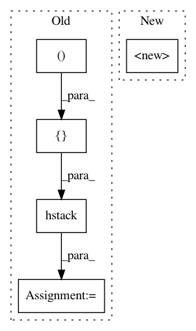

449ccc820a0558d742bc7055bc37c1690dff4496,hypertools/tools/reduce.py,,reduce,#Any#Any#Any#Any#Any#Any#,13
Before Change
// pad cols with zeros if ndims returned is less than ndims
if x_reduced[0].shape[1] < ndims:
for idx, x_r in enumerate(x_reduced):
x_reduced[idx] = np.hstack([x_r, np.zeros((x_r.shape[0], ndims-x_reduced[0].shape[1]))])
if align == True:
// Import is here to avoid circular imports with reduce.py
from .align import align as aligner
After Change
models = {
"PCA" : PCA,
"FastICA" : FastICA,
"TSNE" : TSNE,
"Isomap" : Isomap,
"SpectralEmbedding" : SpectralEmbedding,
"LocallyLinearEmbedding" : LocallyLinearEmbedding
In pattern: SUPERPATTERN
Frequency: 3
Non-data size: 5
Instances
Project Name: ContextLab/hypertools
Commit Name: 449ccc820a0558d742bc7055bc37c1690dff4496
Time: 2017-06-14
Author: andrew.heusser@gmail.com
File Name: hypertools/tools/reduce.py
Class Name:
Method Name: reduce
Project Name: ContextLab/hypertools
Commit Name: dce3b66b54fac2040e826a5a465ff58cf1295e7f
Time: 2017-06-14
Author: andrew.heusser@gmail.com
File Name: hypertools/tools/reduce.py
Class Name:
Method Name: reduce
Project Name: geomstats/geomstats
Commit Name: 21445b6052f3b1ce1a1210ff6d402dd0ad71be0a
Time: 2020-11-17
Author: nicolas.guigui@inria.fr
File Name: geomstats/geometry/special_euclidean.py
Class Name: _SpecialEuclideanMatrices
Method Name: __init__